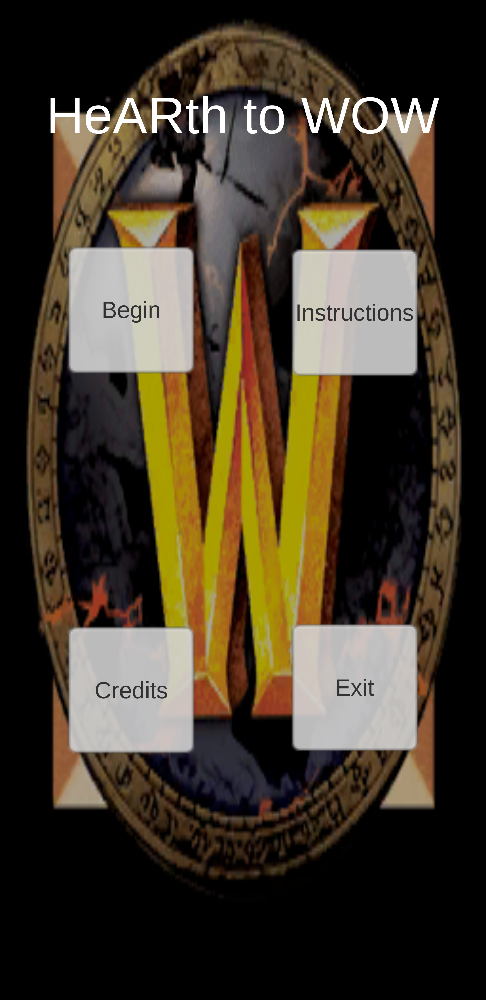
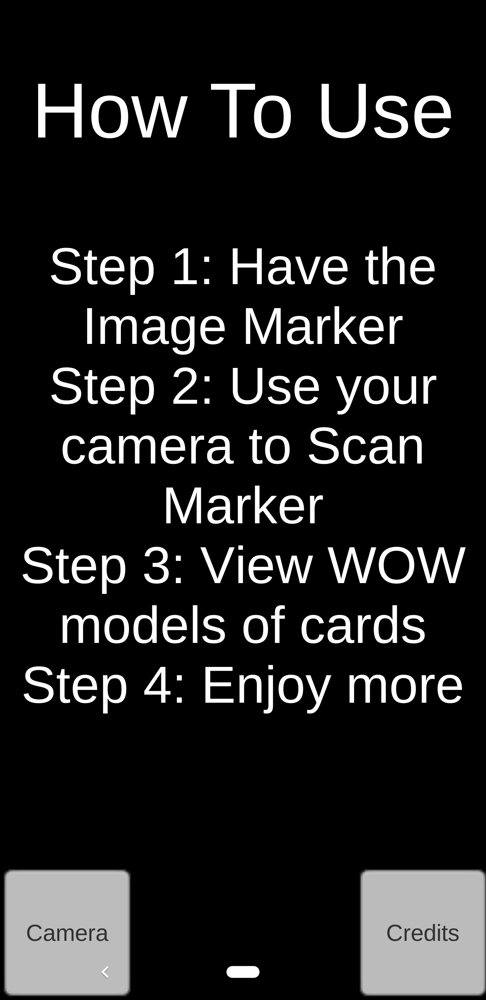

AUGMENTED REALITY PROJECT
HeARth to WOW
Bringing Hearthstone cards to life through augmented reality and their connections to World of Warcraft.
Solo Project • Unity • Vuforia Engine
In-App Screenshots
HeARth to WOW uses a camera-based AR experience to display interactive 3D models when image markers are recognised.


About the Software
HeARth to WOW is an augmented reality project developed independently using Unity and the Vuforia Engine.
Created as a non-commercial academic submission, the application explores the connection between Hearthstone cards and their corresponding World of Warcraft characters and models.
By scanning supported image markers with a device camera, users can view a corresponding 3D model in augmented reality.
Users can rotate and scale the displayed model to examine it more closely, alongside a brief overview of its lore.
My Role
HeARth to WOW was developed as a solo academic project, giving me responsibility for the overall application and its AR experience.
AR Development
Developed the application using Unity and Vuforia Engine to support image-marker-based augmented reality.
Interactive 3D Models
Built an experience where recognised image markers display corresponding 3D models that users can rotate and scale.
User Experience
Created an application flow that introduces users to marker scanning and provides supporting lore information alongside the AR models.
Solo Development
Independently developed the academic project while exploring augmented reality as a medium for interactive content.
How It Works
The application uses image markers to connect physical card imagery with digital 3D content.
Prepare an Image Marker
Have a supported image marker ready for scanning.
Scan with the Camera
Use the device camera to scan the image marker.
Explore the Model
View the corresponding World of Warcraft 3D model in AR.
Rotate and scale the model for a closer look.
Discover the Lore
Read a short lore overview accompanying the displayed model.
Project Details
Explore HeARth to WOW
Visit the itch.io page to access the HeARth to WOW project.
View on itch.ioAcademic Disclaimer
This project was created as a non-commercial academic submission.
The creator has no affiliation with Blizzard Entertainment and does not claim ownership over any Blizzard Entertainment intellectual property. All rights belong to their respective owners.